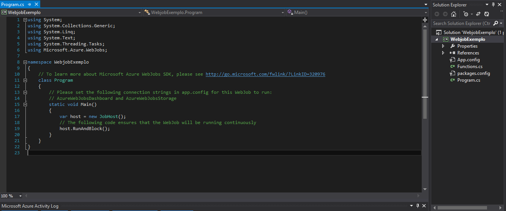

Executando tarefas em background com Webjobs
23/09/2016
Introdução
O texto a seguir é uma versão “estendida” da minha apresentação sobre Azure Webjobs no dotnetConf.local Salvador. Os slides estão disponíveis no aqui.
Nesse post, vou apresentar uma introdução do que são e como funcionam os Webjobs, alguns casos de uso e um breve tutorial de como criar e fazer deploy de Webjob agendado.
Mas antes de começar a abordar os Webjobs, é importante explicar resumidamente o que são os App Services.
App Services
App Services, ou Serviços de Aplicativos, é uma PaaS (platform as a service) capaz de integrar vários serviços do Microsoft Azure, que antes eram entregues separadamente, em uma única solução. Além disso, facilita a integração com vários SaaS (software as a service) e aplicações on-prem como OneDrive, Dropbox, Office365, entre outros.
Os tipos de apps oferecidos pelo App Service são:
- Web Apps: para de websites e aplicações web
- Mobile Apps: para back-end de aplicações móveis
- API Apps: oferece funcionalidades para desenvolver, hospedar e consumir APIs
- Logic App: para implementar integrações e fluxos de trabalho escaláveis e automatizar o acesso e uso de dados na nuvem, sem precisar programar.
Dentre esses tipos de serviços, os de Web Apps e Mobile Apps são os que suportam Webjobs.
Para maiores detalhes sobre App Services, recomendo a leitura dos seguintes artigos (em inglês):
O que são Webjobs
Você já precisou executar alguma rotina em uma determinada data e hora específica (muitas vezes em horários inconvenientes) e teve que esperar até esse determinado momento para iniciar a rotina manualmente? Ou tem alguma tarefa que precisa ser executada de forma recorrente (por exemplo, processar logs de uma aplicação todos os dias à meia noite)?
Então Webjobs é para você! :)
O Azure Webjobs é uma funcionalidade do App Service que permite executar tarefas (jobs) em segundo plano, agendadas ou não. Esses jobs são aplicações console ou scripts e podem ser escritos em diversas linguagem, não apenas em C#. Atualmente, são suportados os seguinte formatos para execução do job: .cmd, .exe, .bat, .ps1, .sh, .php, .py, .js (node.js) e jar.
Os webjobs são executados na mesma VM (máquina virtual) que seu web app, então os recursos dessa VM serão compartilhados entre o web app e o(s) webjob(s). Por isso, eles são indicados para processamentos mais leves, pois processamentos mais pesados que exigem muitos recursos dessa VM podem causar problemas no acesso ao web app, como lentidão ou até indisponibilidade. Mas se você for usar esse web app (ou outro app service) apenas para executar webjobs, isso não chega a ser um grande problema.
Os jobs podem ser executados de três formas:
- Scheduled: são jobs com execução agendada. Você define uma data e hora para a primeira execução e a recorrência na qual esse job será executado, que pode ser em: meses, semanas, dias, horas, minutos ou segundos. É possível definir uma data final, o que significa que após essa data o job não será mais executado. A data final não é obrigatória.
- Continuous: são jobs que serão executados continuamente (até que seja explicitamente parados). Para executar tarefas contínuas, é importante ativar nas configurações do seu web app a opção “Always on” (ou Sempre ativo), pois ele pode parar de executar quando passar muito tempo ocioso, o que, consequentemente, interromperá a execução do job. Por exemplo, quando seu web app / website não é acessado durante muito tempo.
- On demand: jobs que serão executados sob demanda, manualmente mesmo, através do portal do Azure.
No novo portal do Azure, aparecem apenas duas formas de execução do job: Continuous e Triggered, sendo que esse último engloba os jobs agendados e sob demanda. Na prática, os Scheduled Webjobs são Triggered Jobs que são disparados pelo Azure Scheduler.
Casos de Uso
Alguns casos de uso muito comuns e que são sempre usados como exemplo nos artigos sobre webjobs: processamento de imagens, logs, filas (ver Azure Storage Queues) , backups, etc.
No Push Questões, nós usamos webjobs para executar algumas tarefas diárias referente às assinaturas, mas nosso principal uso é para gerar materiais de estudo personalizados para nossos assinantes. Um exemplo é nosso principal produto: o push de questões.
O push de questões consiste em uma espécie de “prova personalizada” que nós geramos para nossos assinantes semanalmente, com questões de provas recentes pré-selecionadas de concursos públicos da área jurídica. Esses pushes são gerados baseados nos assuntos de interesse de cada assinante. Por exemplo, se um assinante está estudando as disciplinas de Direito Constitucional e Direito Administrativo, nós selecionamos questões dessas disciplinas dentro dessas provas pré-selecionadas e enviamos para ele. Esses materiais são gerados e enviados por e-mail toda semana na madrugada de quinta para sexta.
No inicio, nós iniciávamos a execução dessa rotina manualmente. No caso, nós tínhamos um console application que continha essa rotina e quando chegava no horário, nós executávamos. Seria algo como um webjob “on demand”, mas executando localmente. Além da inconveniência do horário, essa tafera acabava demorando muito devido aos recursos limitados da máquina local. Além disso corria o risco de ter a execução interrompida caso a conexão com a internet fosse perdida, pois essa rotina fazia frequente acesso à banco de dados na nuvem (SQL Azure) e armazenamento na nuvem também (Azure Storage).
Diante desses possíveis problemas, nós vimos a necessidade de automatizar e agendar a execução dessa rotina. A primeira opção pensada foi fazer isso usando Worker Roles, que é um tipo de serviço de cloud, altamente escalável, personalizável e configurável. Em resumo, é uma VM que roda um Windows Server e não vem com o IIS (Internet Information Service) instalado por padrão, como acontece com o Web Role. No geral, os Worker Roles são usados justamente para executar processamento em segundo plano e muitas vezes são usados em conjunto com os Web Roles.
No entanto, Worker Roles oferecia muito mais “poder” do que realmente precisávamos, além de ter um custo mais elevado e maior dificuldade para configurar. Foi então que descobrimos os Webjobs.
A seguir, vamos ver como é simples criar um Webjob!
Criando um Webjob
Nesse breve tutorial, vou mostrar como criar um Triggered - Scheduled Webjob, ou seja, um webjob disparado por um Azure Scheduler. A rotina em si não terá nenhum grande processamento, só vai exibir alguma mensagem no console e enviar um e-mail.
Antes de começar, você precisa executar alguns passos:
- Ter uma conta no Azure. (OH, REALLY?? ¬.¬) Se você ainda não tem uma conta, clique aqui para criar. (Free Tier)
- Criou a conta? Pronto. Agora você precisa criar uma conta de armazenamento (storage account). Para não prolongar esse tutorial, clique aqui para ver como fazer. Esse passo é necessário para poder armazenar logs de execução do webjob.
- Criar um App Service do tipo Web App, onde faremos o deploy do webjob. Você pode adiantar esse passo agora, mas pode também deixar para fazer isso no momento do deploy.
Para esse exemplo, estou usando o Visual Studio Professional 2013. Se você não tiver nenhum instalado, pode instalar o Visual Studio Community 2015 que serve também. (É FREE!)
Criando um novo projeto
Para criar um novo projeto de webjob, clique em File >> New >> Project (ou Ctrl+Shift+N). Em Templates, selecione Cloud e Azure Webjob. Dê um nome para seu projeto e clique em OK.
Esse será o código inicial e a estrutura do projeto:

Antes de mexer em código, temos que adicionar uma pequena configuração no App.config que foi gerado no projeto. Temos que definir as connection strings para AzureWebJobsDashboard e AzureWebJobsStorage. Você pode encontrar essa connection string acessando o portal do Azure. Na opção Contas de armazenamento (clássicas), selecione a conta de armazenamento que você criou lá no início, depois a opção Chaves e copie o valor do campo CADEIA DE CONEXÃO PRIMÁRIA e cole nos lugares indicados no App.config.
Voltando para o código…
Queremos um webjob agendado, certo? Então o primeiro passo é remover aquela última linha do método Main onde tem host.RunAndBlock();. Essa linha faz com que o programa continue executando até ser explicitamente parado. Só serviria se estivéssemos criando um webjob contínuo.
O código final de Program.cs deve ficar assim (ver comentários):
Essa classe Mail faz envio de e-mails usando uma conta do gmail. Para ver o código dessa classe no Gist, clique aqui.
Publicando um Webjob
Para fazer deploy do webjob, clique com o botão direito no projeto e escolha a opção Publish as Azure Webjob…
Você verá uma tela para configurar o webjob. Vamos configurar um webjob agendado (Run on a Schedule), recorrente (Recurring Job), sem data final (No end date), que se repetirá a cada 1 dia, às 6:00 AM. Fique atento à timezone, para que o webjob execute no horário esperado.
Dê OK. Em seguida você terá que selecionar o web app no qual você vai publicar o webjob. Vá em Microsoft Azure App Service, selecione a sua Subscription, depois o web app que você criou e dê OK.
Caso você não tenha criado o web app lá no início, clique em New e crie agora. Depois clique em Next >> Next >> Publish. Você pode ver o andamento da publicação na aba Azure App Service Activity. Quando terminar, deve aparecer assim:
Um arquivo JSON será criado com as configurações de execução do webjob.
Você pode alterar diretamente nesse arquivo e publicar da mesma forma que foi descrita anteriormente. Se você preferir configurar por aquela interface gráfica que aparece na primeira vez que você publica o webjob, basta remover esse arquivo JSON e seguir os passos para publicar novamente.
Após publicar, depois que chegar no horário que você definiu como startTime, o webjob deve ser executado. Para ver os logs da execução, acesse o Portal do Azure, na opção Serviços de Aplicativos, selecione o web app que você criou, depois a opção Trabalhos Web. Clique no Webjob que você criou e depois em Logs. Abrirá uma lista de execuções desse job. Clique em uma delas, e deve aparecer uma tela assim:
Note que o horário dos logs é o horário do servidor. Mas como a timezone foi configurada como Brasilia (GMT-3), o job foi executado às 9:00 AM -3, ou seja, às 6:00 AM.
E pronto, você criou, publicou e executou seu primeiro webjob! :)